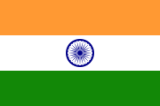
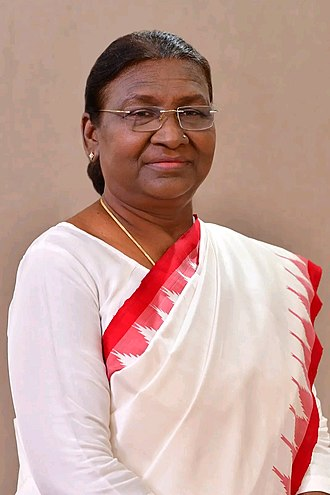
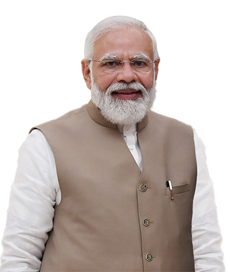
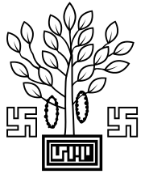
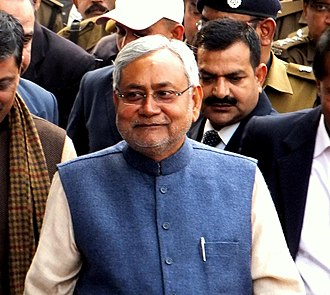

President of India
The president of India (IAST: Bhārat kē Rāṣṭrapati) is the head of state of the Republic of India. The president is the nominal head of the executive,[a] the first citizen of the country, as well as the commander-in-chief of the Indian Armed Forces. Droupadi Murmu is the 15th and current president, having taken office from 25 July 2022. The office of president was created when India officially became a republic on 26 January 1950 after gaining independence on 15th August 1947, when its constitution came into force. The president is indirectly elected by an electoral college comprising both houses of the Parliament of India and the legislative assemblies of each of India's states and territories, who themselves are all directly elected by the citizens. Article 53 of the Constitution of India states that the president can exercise their powers directly or by subordinate authority (with few exceptions), though all of the executive powers vested in the president are, in practice, exercised by the prime minister (a subordinate authority) with the advice of the Cabinet Ministers.[3] The president is bound by the constitution to act on the advice of the prime minister and cabinet as long as the advice does not violate the constitution.
Origin
Power and duties Legislative powers
Presidential Standard of India (1950–1971)
India achieved independence from the British on 15 August 1947, initially as a dominion within the Commonwealth of Nations with George VI as king, represented in the country by a governor-general.[4] Still, following this, the Constituent Assembly of India, under the leadership of B. R. Ambedkar, undertook the process of drafting a completely new constitution for the country. The Constitution of India was eventually enacted on 26 November 1949 and came into force on 26 January 1950,[5]: 26 making India a republic.[6]: 9 The offices of monarch and governor-general were replaced by the new office of President of India, with Rajendra Prasad as its first incumbent.[6]: 1
The Indian constitution accords to the president the responsibility and authority to defend and protect the Constitution of India and its rule of law.[7] Invariably, any action taken by the executive or legislature entities of the constitution shall become law only after the president's assent. The president shall not accept any actions of the executive or legislature which are unconstitutional. The president is the foremost, most empowered and prompt defender of the constitution (Article 60), who has pre-emptive power for ensuring constitutionality in the actions of the executive or legislature. The role of the judiciary in upholding the Constitution of India is the second line of defense in nullifying any unconstitutional actions of the executive and legislative entities of the Indian Union.
Power and duties
Under the draft constitution the President occupies the same position as the King under the English Constitution. He is the head of the state but not of the Executive. He represents the Nation but does not rule the Nation. He is the symbol of the Nation. His place in the administration is that of a ceremonial device on a seal by which the nation's decisions are made known.
— Bhimrao Ambedkar, as chairperson of the drafting committee of the Constituent Assembly of India during various debates about the president being constitutional head of the state.[8][9]
Duty
The primary duty of the president is to preserve, protect and defend the constitution and the law of India as made part of their oath (Article 60 of Indian constitution).[7] The president is the common head of all independent constitutional entities. All their actions, recommendations (Article 3, Article 111, Article 274, etc.) and supervisory powers (Article 74(2), Article 78C, Article 108, Article 111, etc.) over the executive and legislative entities of India shall be used in accordance to uphold the constitution.[10] There is no bar on the actions of the president to contest in the court of law.[11]
Legislative powers
Legislative power is constitutionally vested in the Parliament of India of which the president is the head, to facilitate the lawmaking process per the constitution (Article 78, Article 86, etc.). The president summons both the houses (Lok Sabha and Rajya Sabha) of the parliament and prorogues them. They can dissolve the Lok Sabha.[5]: 147 The president inaugurates parliament by addressing it after the general elections and also at the beginning of the first session every year per Article 87(1). The presidential address on these occasions is generally meant to outline the new policies of the government.[12]: 145 All bills passed by the parliament can become laws only after receiving the assent of the president per Article 111. After a bill is presented to him, the president shall declare either that they assent to the Bill, or that they withhold assent from it. As a third option, they can return a bill to parliament, if it is not a money bill, for reconsideration. President may be of the view that a particular bill passed under the legislative powers of parliament is violating the constitution, they can send back the bill with their recommendation to pass the bill under the constituent powers of parliament following the Article 368 procedure. When, after reconsideration, the bill is passed accordingly and presented to the president, with or without amendments, the president cannot withhold their assent from it. The president can also withhold their assent to a bill when it is initially presented to him (rather than return it to parliament) thereby exercising a pocket veto on the advice of the prime minister or council of ministers per Article 74 if it is inconsistent with the constitution.[11] Article 143 gives the president the power to consult the supreme court about the constitutional validity of an issue. The president shall assent to constitutional amendment bills without power to withhold the bills per Article 368 (2). When either of the two Houses of the Parliament of India is not in session, and if the government feels the need for an immediate procedure, the president can promulgate ordinances that have the same force and effect as an act passed by parliament under its legislative powers. These are in the nature of interim or temporary legislation and their continuance is subject to parliamentary approval. Ordinances remain valid for no more than six weeks from the date the parliament is convened unless approved by it earlier.[13] Under Article 123, the president as the upholder of the constitution shall be satisfied that immediate action is mandatory as advised by the union cabinet and they are confident that the government commands majority support in the parliament needed for the passing of the ordinance into an act and parliament can be summoned to deliberate on the passing of the ordinance as soon as possible. The promulgated ordinance is treated as an act of parliament when in force and it is the responsibility of the president to withdraw the ordinance as soon as the reasons for the promulgation of the ordinance are no longer applicable. Bringing laws in the form of ordinances has become a routine matter by the government and president, but the provisions made in Article 123 are meant for mitigating unusual circumstances where immediate action is inevitable when the extant provisions of the law are inadequate. Re-promulgation of an ordinance after failing to get approval within the stipulated time of both houses of parliament is an unconstitutional act by the president.[14] The president should not incorporate any matter in an ordinance which violates the constitution or requires an amendment to the constitution. The president should take moral responsibility when an ordinance elapses automatically or is not approved by the parliament or violates the constitution.[15] Thus, it is believed that the POI is the de-jure head of the state, whereas PM is the de-facto head.
Executive powers
The President of the Indian Union will be generally bound by the advice of his Ministers. ... He can do nothing contrary to their advice nor can do anything without their advice. The President of the United States can dismiss any Secretary at any time. The President of the Indian Union has no power to do so, so long as his Ministers command a majority in Parliament — Bhimrao Ambedkar, chairperson of the drafting committee of the Constituent Assembly of India[8] As per Article 53, the executive power of the country is vested in the president and is exercised by the president either directly or through officers subordinate to him in accordance with the constitution. When parliament thinks fit it may accord additional executive powers to the president per Article 70 which may be further delegated by the president to the governors of states per Article 160. Union cabinet with prime minister as its head, should aid and advise the president in performing their functions. Per Article 74 (2), the council of ministers or prime minister are not accountable legally to the advice tendered to the president but it is the sole responsibility of the president to ensure compliance with the constitution in performing their duties. President or their subordinate officers is bound by the provisions of the constitution notwithstanding any advice by the union cabinet.[16] As per Article 142, it is the duty of the president to enforce the decrees of the supreme court.
Judicial powers
The primary duty of the president is to preserve, protect and defend the constitution and the law of India per Article 60. The president appoints the Chief Justice of India and other judges on the advice of the chief justice. The President may dismiss a judge with a two-thirds vote of the two Houses of the parliament.[17] The Indian government's chief legal adviser, Attorney General of India, is appointed by the president of India under Article 76(1) and holds office during the pleasure of the president. If the president considers a question of law or a matter of public importance has arisen, they can also ask for the advisory opinion of the supreme court per Article 143. Per Article 88, the president can ask the attorney general to attend the parliamentary proceedings and report to him any unlawful functioning if any.[18]
President Of Republic Of India
Bharat Ganarajya ke Rastrapati

Emble Of India

Flag Of India

Incumbent
Droupadi Murmu
since 25 july 2022
Style
Rāṣṭrapati Mahodaya (Within India (Hindi))[1] Hon’ble President (Within India (English))[1] His/Her Excellency (Outside India)[1] The Honourable (Within Commonwealth)
Type
Head Of state
Abbreviaton
POI
Residance
Rashtrapati Bhavan, New Delhi, Delhi, India (Primary) Rashtrapati Nilayam, Bolarum, Secunderabad, Telangana, India (Winter) The Retreat Building, Chharabra, Shimla, Himachal Pradesh, India (Summer)
Seat
Rastripati Bhavan, new delhi
Appointer
Electoral Collage Of India
Term Length
Five Years
No restriction on renewal
Constituating
Instrument
Constitution Of India (Artical 15 )
Precursor
King Of India
Formation
26 January 1950; 72 years ago
First holder
Rajendra Prasad
Deputy
Vice President of India
Salary
• ₹500,000 (US$6,300) (per month)
• ₹6,000,000 (US$75,000) (annually)[2]
Appointment powers
The president appoints as prime minister, the person most likely to command the support of the majority in the Lok Sabha (usually the leader of the majority party or coalition). The president then appoints the other members of the Council of Ministers, distributing portfolios to them on the advice of the prime minister.[19]: 72 The Council of Ministers remains in power at the 'pleasure' of the president. The president appoints 12 members of the Rajya Sabha from amongst persons who have special knowledge or practical experience in respect of such matters as literature, science, art and social service. The president may nominate not more than two members of Anglo Indian community as Lok Sabha members per Article 331, which was removed in 2019. Governors of states are also appointed by the president who shall work at the pleasure of the president. Per Article 156, the president is empowered to dismiss a governor who has violated the constitution in their acts. The president is responsible for making a wide variety of appointments. These include:[19]: 72 The Chief Justice of India and other judges of the Supreme Court of India and state/union territory high courts. The Chief Minister of the National Capital Territory of Delhi (Article 239 AA 5 of the constitution). The Comptroller and Auditor General Of India. The Chief Election Commissioner and other Election Commissioners. The Chairman and other members of the Union Public Service Commission. The Attorney General Of India. Ambassadors and High Commissioners to other countries (only through the list of names given by the prime minister).[20][21]: 48 Officers of the All India Services (IAS, IPS and IFoS), and other Central Civil Services in Group 'A'.
Prime Minister
The prime minister of India (IAST: Bhārat kē Pradhānmantrī) is the head of government of the Republic of India.[2][3] Executive authority is vested in the prime minister and their chosen Council of Ministers,[4][5][6] though the President of India is the constitutional, nominal, and ceremonial head of state.[7][8][9][10][11] The prime minister is often the leader of the party or the coalition with a majority in the lower house of the Parliament of India, the Lok Sabha,[12] which is the main legislative body in the Republic of India.[13] The prime minister and their cabinet are at all times responsible to the Lok Sabha.[14][15] The prime minister is appointed by the president of India; however the prime minister has to enjoy the confidence of the majority of Lok Sabha members, who are directly elected every five years, lest the prime minister shall resign. The prime minister can be a member of the Lok Sabha or of the Rajya Sabha, the upper house of the parliament. The prime minister controls the selection and dismissal of members of the Union Council of Ministers; and allocation of posts to members within the government. The longest-serving prime minister was Jawaharlal Nehru, also the first prime minister, whose tenure lasted 16 years and 286 days. His premiership was followed by Lal Bahadur Shastri's short tenure and Indira Gandhi's 11- and 4-year-long tenures, both politicians belonging to the Indian National Congress. After Indira Gandhi's assassination, her son Rajiv Gandhi took charge until 1989, when a decade with six unstable governments began. This was followed by the full terms of Atal Bihari Vajpayee, Manmohan Singh, and Narendra Modi. Modi is the 14th and current prime minister of India, serving since 26 May 2014.
Origins and history
India follows a parliamentary system in which the prime minister is the presiding head of the government and chief of the executive of the government. In such systems, the head of state, or, the head of state's official representative (i.e., the monarch, president, or governor-general) usually holds a purely ceremonial position and acts—on most matters—only on the advice of the prime minister. The prime minister—if they are not already—must become a member of parliament within six months of beginning his/her tenure. A prime minister is expected to work with other central ministers to ensure the passage of bills by the parliament.
History
1947-184
Since 1947, there have been 14 different prime ministers.[a] The first few decades after 1947 saw the Indian National Congress' (INC) almost complete domination over the political map of India. India's first prime minister—Jawaharlal Nehru—took oath on 15 August 1947. Nehru went on to serve as prime minister for 17 consecutive years, winning four general elections in the process. His tenure ended in May 1964, on his death.[16][17] After the death of Nehru, Lal Bahadur Shastri—a former home minister and a leader of the Congress party—ascended to the position of prime minister. Shastri's tenure saw the Indo-Pakistani War of 1965. Shashtri subsequently died of a reported heart attack in Tashkent, after signing the Tashkent Declaration.[18] After Shastri, Indira Gandhi—Nehru's daughter—was elected as the country's first woman prime minister. Indira's first term in office lasted 11 years, in which she took steps such as nationalisation of banks;[19] end of allowances and political posts, which were received by members of the royal families of the erstwhile princely states of British India.[20] In addition, events such as the Indo-Pakistani War of 1971;[21] the establishment of a sovereign Bangladesh;[22] accession of Sikkim to India, through a referendum in 1975;[23] and India's first nuclear test in Pokhran occurred during Indira's first term. In 1975, President Fakhruddin Ali Ahmed—on Indira's advice—imposed a state of emergency, therefore, bestowing the government with the power to rule by decree, the period is known for human right violations.[24][25] After widespread protests, the emergency was lifted in 1977, and a general election was to be held. All of the political parties of the opposition—after the conclusion of the emergency—fought together against the Congress, under the umbrella of the Janata Party, in the general election of 1977, and were successful in defeating the Congress. Subsequently, Morarji Desai—a former deputy prime minister—became the first non-Congress prime minister of India. The government of prime minister Desai was composed of groups with opposite ideologies, in which unity and co-ordination were difficult to maintain. Ultimately, after two and a half years as PM; on 28 July 1979, Morarji tendered his resignation to the president; and his government fell. Thereafter, Charan Singh—a deputy prime minister in Desai's cabinet—with outside, conditional support from Congress, proved a majority in Lok Sabha and took oath as prime minister.[26][27] However, Congress pulled its support shortly after, and Singh had to resign; he had a tenure of 5 months, the shortest in the history of the office. Shah Mohammad Reza Pahlavi and Shahbanu Farah Pahlavi of Iran being received by prime minister Indira Gandhi at New Delhi airport, 1970. Ronald and Nancy Reagan, Indira Gandhi, US state dinner, 1982. In 1980, after a three-year absence, the Congress returned to power with an absolute majority. Indira Gandhi was elected prime minister a second time.[28] During her second tenure, Operation Blue Star—an Indian Army operation inside the Golden Temple, the most sacred site in Sikhism—was conducted, resulting in reportedly thousands of deaths.[29] Subsequently, on 31 October 1984, Gandhi was shot dead by Satwant Singh and Beant Singh—two of her bodyguards—in the garden of her residence at 1, Safdarjung Road, New Delhi.[30]
1984-1999
After Indira, Rajiv—her eldest son and 40 years old at the time—was sworn in on the evening of 31 October 1984, becoming the youngest person ever to hold the office of prime minister. Rajiv immediately called for a general election. In the subsequent general election, the Congress secured an absolute majority, winning 401 of 552 seats in the Lok Sabha, the maximum number received by any party in the history of India.[31][32] Vishwanath Pratap Singh—first finance minister and then later defence minister in Gandhi's cabinet—uncovered irregularities, in what became known as the Bofors scandal, during his stint at the Ministry of Defence; Singh was subsequently expelled from Congress and formed the Janata Dal and—with the help of several anti-Congress parties—also formed the National Front, a coalition of many political parties.[33] In the general election of 1989, the National Front—with outside support from the Bharatiya Janata Party (BJP) and the Left Front—came to power.[34] V. P. Singh was elected prime minister.[34] During a tenure of less than a year, Singh and his government accepted the Mandal Commission's recommendations.[35] Singh's tenure came to an end after he ordered the arrest of BJP member Lal Krishna Advani,[36] as a result, BJP withdrew its outside support to the government, V. P. Singh lost the subsequent vote-of-no-confidence 146–320 and had to resign.[37] After V. P. Singh's resignation, Chandra Shekhar along with 64 members of parliament (MPs) floated the Samajwadi Janata Party (Rashtriya),[38] and proved a majority in the Lok Sabha with support from Congress.[39] But Shekhar's premiership did not last long, Congress proceeded to withdraw its support; Shekhar's government fell as a result, and new elections were announced.[40] In the general election of 1991, Congress—under the leadership of P. V. Narasimha Rao—formed a minority government; Rao became the first PM of South Indian origin.[41] After the dissolution of the Soviet Union, India was on the brink of bankruptcy, so, Rao took steps to liberalise the economy, and appointed Manmohan Singh—an economist and a former governor of the Reserve Bank of India—as finance minister.[41] Rao and Singh then took various steps to liberalise the economy,[41] these resulted in an unprecedented economic growth in India.[42] His premiership, however, was also a witness to the demolition of the Babri Masjid, which resulted in the death of about 2,000 people.[43] Rao, however, did complete five continuous years in office, becoming the first prime minister outside of the Nehru—Gandhi family to do so.[41] Queen Beatrix of the Netherlands, left with PM Rajiv Gandhi, Prince Claus, and Sonia Gandhi, The Hague, 1985. Prime Minister P. V. Narasimha Rao, left, inaugurating the National Science Centre, New Delhi, 1 September 1992 After the end of Rao's tenure in May 1996, the nation saw four prime ministers in a span of three years, viz., two tenures of Atal Bihari Vajpayee; one tenure of H. D. Deve Gowda from 1 June 1996 to 21 April 1997; and one tenure of I. K. Gujral from 21 April 1997 to 19 March 1998. The government of Prime Minister Vajpayee—elected in 1998—took some concrete steps. In May 1998—after a month in power—the government announced the conduct of five underground nuclear explosions in Pokhran.[44] In response to these tests, many western countries, including the United States, imposed economic sanctions on India,[45] but, due to the support received from Russia, France, the Gulf countries and some other nations, the sanctions—were largely—not considered successful.[46][47] A few months later in response to the Indian nuclear tests, Pakistan also conducted nuclear tests.[48] Given the deteriorating situation between the two countries, the governments tried to improve bilateral relations. In February 1999, the India and Pakistan signed the Lahore Declaration, in which the two countries announced their intention to annul mutual enmity, increase trade and use their nuclear capabilities for peaceful purposes.[49] In May 1999, All India Anna Dravida Munnetra Kazhagam withdrew from the ruling National Democratic Alliance (NDA) coalition;[50] Vajpayee's government, hence, became a caretaker one after losing a motion-of-no-confidence 269–270, this coincided with the Kargil War with Pakistan.[51] In the subsequent October 1999 general election, the BJP-led NDA and its affiliated parties secured a comfortable majority in the Lok Sabha, winning 299 of 543 seats in the lower house.[52]
Prime Minister Of India
Bhārat kē Pradhānmantrī
Emble Of India
Flag Of India

Incumbent
Narendra Modi
since 26 May 2014
Style
The Honourable Mr. Prime Minister (informal) His Excellency (diplomatic)
Type
Head of government
Status
Leader of the Executive
Abbreviation
PM
Member of
Parliament of India Union Council of Ministers
Reports to
- President of india
- vice President of india
- Parliament of india
Residence
7, Lok Kalyan Marg, New Delhi, Delhi, India
Seat
Prime Minister's Office, South Block, Central Secretariat, Raisina Hill, New Delhi, Delhi, India
Nominator
Lok Sabha members
Appointer
President of India by convention, based on appointee's ability to command confidence in the Lok Sabha
Term length
At the pleasure of the President Lok Sabha term is 5 years unless dissolved sooner No term limits specified
Constituting instrument
Articles 74 & 75, Constitution of India
Precursor
Vice President of the Executive Council
Formation
15 August 1947; 74 years ago
First holder
Jawaharlal Nehru
Deputy
Deputy Prime Minister
Salary
₹280,000 (US$3,500) (per month)[1] ₹3,360,000 (US$42,000) (Annual)[1]
2000-Present
Vajpayee continued the process of economic liberalisation during his reign, resulting in economic growth.[53] In addition to the development of infrastructure and basic facilities, the government took several steps to improve the infrastructure of the country, such as, the National Highways Development Project (NHDP) and the Pradhan Mantri Gram Sadak Yojana (PMGSY; IAST: Pradhānamaṃtrī Grāma Saḍaka Yojanā; lit. Prime Minister Rural Road Scheme),[54] for the development of roads. But during his reign, the 2002 Gujarat communal riots in the state of Gujarat took place; resulting in about 2,000 deaths.[55] Vajpayee's tenure as prime minister came to an end in May 2004, making him the first non-Congress PM to complete a full five-year tenure.[53] In the 2004 election, the Congress emerged as the largest party in a hung parliament; Congress-led United Progressive Alliance (UPA)—with outside support from the Left Front, the Samajwadi Party (SP) and Bahujan Samaj Party (BSP) among others—proved a majority in the Lok Sabha,[56] and Manmohan Singh was elected prime minister; becoming the first Sikh prime minister of the nation.[56] During his tenure, the country retained the economic momentum gained during Prime Minister Vajpayee's tenure.[57] Apart from this, the government succeeded in getting the National Rural Employment Guarantee Act, 2005, and the Right to Information Act, 2005 passed in the parliament.[58][59] Further, the government strengthened India's relations with nations like Afghanistan;[60][61] Russia;[62] the Gulf states; and the United States, culminating with the ratification of India–United States Civil Nuclear Agreement near the end of Singh's first term.[63][64][65] At the same time, the November 2008 Mumbai terrorist attacks also happened during Singh's first term in office.[66][67] In the general election of 2009, the mandate of UPA increased.[68][69] Prime Minister Singh's second term, however, was surrounded by accusations of high-level scandals and corruption.[70][71] Singh resigned as prime minister on 17 May 2014, after Congress' defeat in the 2014 general election.[72][73][74] In the general election of 2014, the BJP-led NDA got an absolute majority, winning 336 out of 543 Lok Sabha seats; the BJP itself became the first party since 1984 to get a majority in the Lok Sabha. Narendra Modi—the Chief Minister of Gujarat—was elected prime minister, becoming the first prime minister to have been born in an independent India.[75] Narendra Modi was re-elected as prime minister in 2019 with a bigger mandate than that of 2014. The BJP-led NDA winning 354 seats out of which BJP secured 303 seats.[76]
Constitutional framework and position of Prime Minister
The Constitution envisions a scheme of affairs in which the president of India is the head of state; in terms of Article 53 with office of the prime minister being the head of Council of Ministers to assist and advise the president in the discharge of his/her constitutional functions. To quote, Article 53, 74 and 75 provide as under; The executive powers of the Union shall be vested in the president and shall be exercised either directly or through subordinate officers, in accordance with the Constitution. — Article 53(1), Constitution of India There shall be a Council of Ministers with the Prime Minister at the head to aid and advise the president who shall, in the exercise of his functions, act in accordance with such advice. — Article 74(1), Constitution of India The Prime Minister shall be appointed by the President and the other Ministers shall be appointed by the President on the advice of the Prime Minister. — Article 75(1), Constitution of India Like most parliamentary democracies, the president's duties are mostly ceremonial as long as the constitution and the rule of law is obeyed by the cabinet and the legislature. The prime minister of India is the head of government and has the responsibility for executive power. The president's constitutional duty is to preserve, protect and defend the Constitution and the law per article 60. In the constitution of India, the prime minister is mentioned in only four of its articles (articles 74, 75, 78 and 366). The prime minister plays a crucial role in the government of India by enjoying majority in the Lok Sabha.
Appointment, tenure and removal
Eligibility
According to Article 84 of the Constitution of India, which sets the principle qualification for member of Parliament, and Article 75 of the Constitution of India, which sets the qualifications for the minister in the Union Council of Ministers, and the argument that the position of Prime Minister has been described as primus inter pares (the first among equals),[77] A Prime Minister must:
be a citizen of India.
be a member of the Lok Sabha or the Rajya Sabha. If the person chosen as Prime Minister is neither a member of the Lok Sabha nor the Rajya Sabha at the time of selection, they must become a member of either of the houses within six months.
be above 25 years of age if they are a member of the Lok Sabha, or, above 30 years of age if they are a member of the Rajya Sabha.
not hold any office of profit under the government of India or the government of any state or under any local or other authority subject to the control of any of the said governments.
Once a candidate is elected as the prime minister, they must vacate their posts at any private or government companies and may take up the position only on completion of their term.
Oaths of office and secrecy
First swearing-in ceremony of Narendra Modi, 2014.
The prime minister is required to make and subscribe in the presence of the President of India before entering office, the oath of office and secrecy, as per the Third Schedule of the Constitution of India.
Oath of office:
I,
Protection
The Special Protection Group (SPG) is charged with protecting the sitting prime minister and his/her family.[114][115] The security is aided by the Central Reserve Police Force (CRPF), Border Security Force (BSF) and the Delhi Police to provide three-rung security for the estate.
Chief Minister
The chief minister of Bihar is the chief executive of the Indian state of Bihar. As per the Constitution of India, the Governor of Bihar is the state's de jure head, but de facto executive authority rests with the chief minister. Following elections to the Bihar Legislative Assembly, the governor usually invites the party (or coalition) with a majority of seats to form the government. The governor appoints the chief minister, whose council of ministers are collectively responsible to the assembly. Given that he has the confidence of the assembly, the chief minister's term is for five years and is subject to no term limits.[1] From 1946, 23 people have been Chief Minister of Bihar. The inaugural holder was Sri Krishna Sinha of the Indian National Congress party, he also has the longest incumbency. The current incumbent is Nitish Kumar who is having incumbency since 22 February 2015.
Premiers of Bihar
The province of Bihar headquartered in Patna then comprised the present-day states Bihar and Jharkhand. On 1 April 1936, Bihar and Orissa became separate provinces by the partition of the province of Bihar and Orissa. Under the Government of India Act 1935, a bicameral legislature was set up with a legislative assembly and a legislative council with a government headed by the Premier.
Timeline
Chief Minister Of India

Emblem_of_Bihar
Flag Of India

Incumbent
Nitish Kumar
since 22 February 2015
Status
Head of government
Abbreviation
CM
Member of
Bihar Legislative Assembly
Reports to
Governor of Bihar
Residence
1, Aney Marg, Patna
Seat
Patna
Appointer
Governor of Bihar
Term length
At the confidence of the assembly Chief minister's term is for five years and is subject to no term limits.[1]
Precursor
Premier of Bihar
Inaugural holder
Shri Krishna Sinha
Formation
26 January 1950 (72 years ago)
Deputy
Tarkishore Prasad Renu Devi